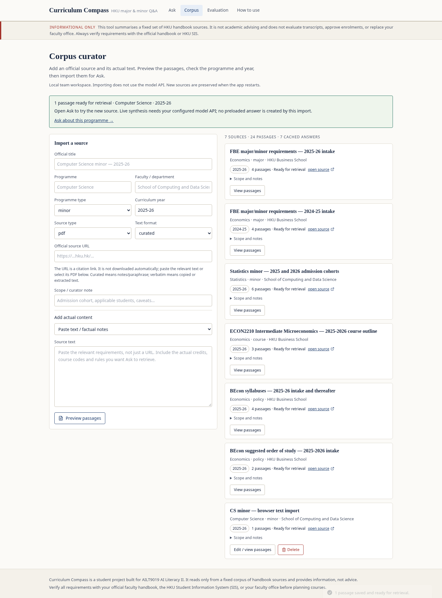
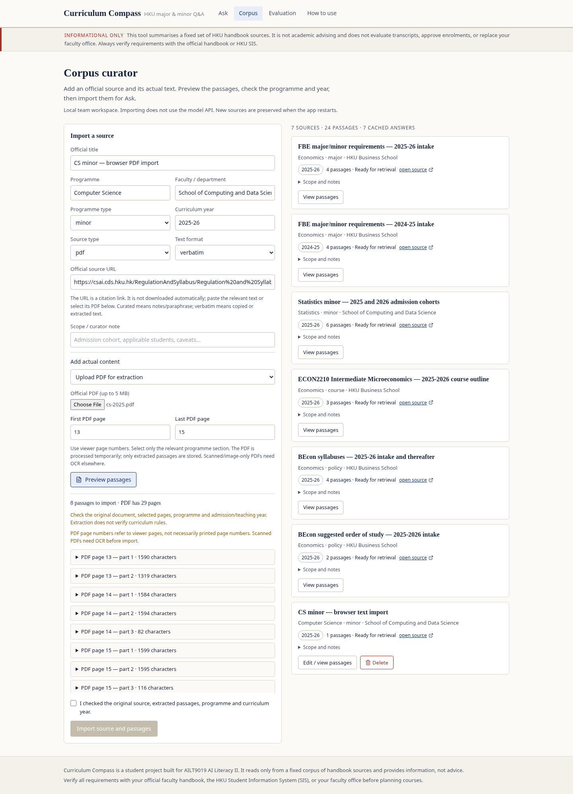

Keep years separate
Filter material by the applicable curriculum year before ranking passages.
AILT9019 · GROUP 42 · v2.0
Major and minor requirements, made easier to explore. Ask a question, check the curriculum year, and read the passages behind the answer.
用自然语言查询港大主修与辅修要求，按学年检索，对照来源核实。
A static project showcase. The working Q&A app runs locally.
“What are the requirements
for a CS minor?”
FROM REVIEWED SOURCE MATERIAL
Source: HKU BEng(CompSc) regulations, 2025–26
Subject to approval · verify cohort and original text
01 / THE PROBLEM
One curriculum question can mean several faculty websites, PDFs and different intake years.
Built for HKU students—especially in Years 1 and 2—HKUCurricGuide brings a focused collection of curriculum materials into one inspectable workflow. It helps locate information; students still make their own choices and verify the rules.
Filter material by the applicable curriculum year before ranking passages.
Open source passages and official links alongside the answer.
Refuse unsupported requests and clearly label live, reference and rule responses.
02 / HOW IT WORKS
The team built the retrieval, curriculum rules, curator interface and output labels. Existing frameworks power the app; the model supplies language synthesis.
Enter a programme or course question.
Detect administrative requests and unavailable material.
Year-filtered TF-IDF ranking, programme aliases and course-code anchors.
A labelled reference, live model answer or refusal, with source context.
No web search, automatic crawling, model training or external-agent integration is claimed.
03 / FROM MISSING COVERAGE TO A SOURCED ANSWER
A source URL alone is not a corpus. v2.0 lets a curator import actual text or selected PDF pages, review the passages, then save them for retrieval.
The original Economics/Statistics collection did not cover Computer Science. Refusing to guess was safe, but limited usefulness.
Gao Junhang tested pasted notes and then the official PDF on Windows. The answer card showed live model · qwen3.8-flash and the 42-credit structure. The PDF-based response also included incompatible programme combinations.
This is a reported manual run, not a benchmark or a live answer on this page. The local CS import is not included automatically in a fresh clone.
Repeat the import test ↗
Upload a PDF of up to 5 MB, select viewer pages, then preview, edit or remove passages. The CS minor starts partway through viewer page 13; the preceding major-rule text must be removed before saving the minor source.
Only extracted text is stored. Edited text is marked curated. Scanned/encrypted PDFs and OCR are outside scope. Imported sources can be edited or deleted and persist across restarts.

04 / WHAT THE EVIDENCE SHOWS
We distinguish program checks, observed routing and factual accuracy. Passing one does not establish the others.
| Requested mode | Cached | Live | Rule / refusal |
|---|---|---|---|
| Reference first | 7 | 1 | 10 |
| Live first | 0 | 8 | 10 |
Historical 36-request comparison, not a new v2.0 benchmark. Live-first median model-response latency: 6.173 s (8 responses). Human accuracy/citation scores are not recorded in the published logs; no overall accuracy rate is claimed.
Expected: decline administrative action.
Observed: administrative refusal; no model call.
Expected: do not borrow another year’s rules.
Observed: no exact match; no source citations.
Case 15 mistranslated BEcon as “工商管理学士”. A visible model badge confirms generation, not factual correctness.
Next step: controlled terminology and source-context checks05 / TRY THE WORKING PROJECT
The public showcase needs no installation. To test the application, follow the bilingual README. The code repository must be accessible to the teaching team.
Clone the repository or download its source. Python 3.12, Node.js and pnpm are recommended. Keep dependencies outside cloud-sync folders.
Open repository ↗If GitHub requests access, use a team-authorised account. The showcase remains public.
Windows: double-click start.bat.
macOS / Linux: bash start.sh.
Open localhost:3000.
Use the README’s hidden-key helper for live answers. Without a key, exact preloaded examples and corpus import still work.
Setup + expected outputs ↗Windows: text/PDF import and live answers.
Apple Silicon Mac: startup, offline Q&A, extraction, import/delete and 74 tests.
Intel Mac and Mac live API: not verified.
06 / WATCH THE PROJECT
The presentation explains the project; the separate demo shows continuous input → processing → output, evaluation and a real boundary case.
YouTube link not yet supplied.
YouTube link not yet supplied.
Video links will be added after the team provides them. There are no placeholder play buttons or simulated recordings.
07 / THE TEAM
AILT9019 · AI Literacy II · The University of Hong Kong
Group 42
Development · corpus checking · final report · video editing
Development · macOS adaptation · presentation slides
Evaluation and citation review · report review
Reproducibility, ethics and reference checks · report review
AI-use disclosure. OpenAI Codex/ChatGPT assisted coding, tests, documentation and writing; qwen3.8-flash generates live curriculum answers through Bailian. The team reviews retained work. Public HKU material is cited, not claimed as an openly licensed full-document dataset. No API keys, personal academic records or private contribution details are published here.